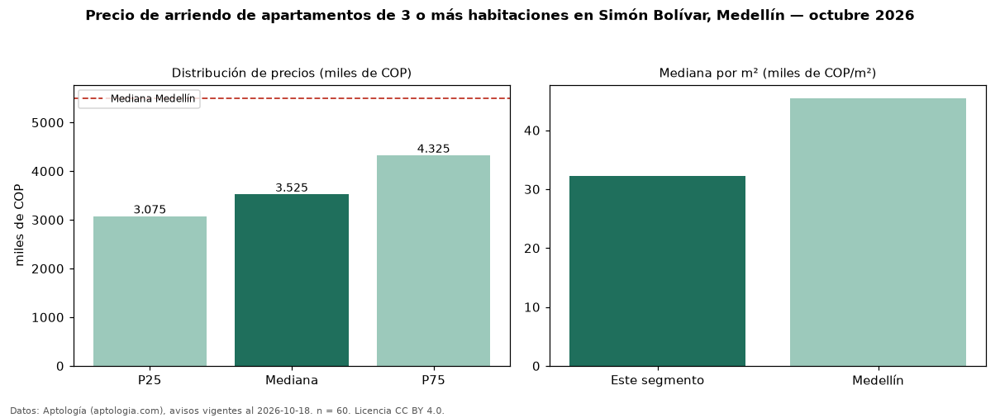

Precio de arriendo de apartamentos de 3 o más habitaciones en Simón Bolívar, Medellín — octubre 2026
En Simón Bolívar, Medellín, la mediana de canon mensual de apartamentos de 3 o más habitaciones es COP 3,52 millones, según 60 avisos vigentes. Eso es 36 % por debajo de la mediana de Medellín para apartamentos de 3 o más habitaciones (COP 5,50 millones). Por metro cuadrado, la mediana es COP 32.273/m² al mes (n = 60 avisos con área), 29 % por debajo de Medellín (COP 45.455/m²). Son 53 % de los 113 avisos de apartamentos en arriendo de la zona, cuya mediana general es COP 3,00 millones (+18 %). Con el precio por m² de venta del mismo segmento (COP 5,43 millones/m²), la rentabilidad bruta implícita es 7,1 % anual (aproximación con medianas de ofertas distintas). El área mediana anunciada es 110 m². El estrato más frecuente es 5 (63 % de los avisos con estrato). 64 % de los avisos con el dato declara parqueadero o cochera. Datos: Aptología (aptologia.com), CC BY 4.0 — https://www.aptologia.com/arriendo/medellin/simon-bolivar. Archivos: PDF, CSV con las cifras y gráfica PNG.

| Avisos únicos | 60 |
|---|---|
| Percentil 25 | COP 3.075.000 |
| Mediana | COP 3.525.000 |
| Percentil 75 | COP 4.325.000 |
| Mediana por m² | COP 32.272 |
Fuente: avisos vigentes de portales inmobiliarios recopilados por Aptología, deduplicados (mínimo 30 avisos únicos por celda). Precios pedidos, no cerrados. Fecha: 2026-10-18.